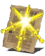

Descrição: Milagre ancestral supostamente criado por guerreiros que um dia serviram ao Deus do Sol.
Oferece um aumento temporário ao ataque e à defesa do conjurador e de aliados próximos.
Localização:
Usos: 3
